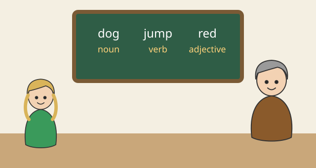

Noun, verb, adjective: die Namen der Wortarten
Mit einem KI-Tutor lernen
Ein KI-Tutor erklärt dir diese Seite und hilft dir bei den Aufgaben. Wähl deinen Assistenten:
Mit Claude öffnen Mit ChatGPT öffnen Mit Mistral Vibe öffnen
Du nutzt dein eigenes Konto beim Anbieter. Der Assistent ist kein Angebot von lernapps.net: lernapps liefert nur Inhalte und Aufgaben. Die Wahl gilt für alle Seiten, nur auf diesem Gerät.
Mr Hill schreibt an die Tafel
Mr Hill schreibt drei Wörter an die Tafel und klebt an jedes ein Etikett. Sophie erkennt die Etiketten nicht. Sie sind auf Englisch.
Das kannst du danach: Die englischen Namen noun, verb, adjective, sentence und tense verstehen und sagen, zu welcher Art ein Wort gehört.

Die Tafel von Mr Hill: drei Wörter mit ihren Etiketten.
Quelle: eigene Zeichnung. Lizenz: CC-BY-4.0.Aufgabe
Lösung
Ein Hund richtige Antwort
Dog heißt „Hund“. Ein Hund ist ein Lebewesen, also ein Nomen.
Eine Katze
Eine Katze heißt cat.
Ein Pferd
Ein Pferd heißt horse.
Ein noun ist ein Nomen, also ein Wort für ein Lebewesen oder eine Sache. Dog ist ein Beispiel.
Mehr dazu: Lernlandkarte Englisch · Grammatische Fachbegriffe
Die Namen der Wortarten
Die Etiketten sind die englischen Namen. Auf dem Poster stehen sie mit dem deutschen Namen und einem Beispiel.
| Englisch | Deutsch |
|---|---|
| noun | Nomen (dog) |
| verb | Verb (jump) |
| adjective | Adjektiv (red) |
| sentence | Satz |
| tense | Zeitform |
Merke
Ein noun sagt, was etwas ist. Ein verb sagt, was jemand tut. Ein adjective sagt, wie etwas ist. Ein sentence ist ein ganzer Satz. Das tense sagt, wann etwas passiert.
Übung
Aufgabe
Lösung
Richtige Antwort: book – noun; run – verb; big – adjective
Book ist eine Sache, run sagt, was jemand tut, und big sagt, wie etwas ist.
Mehr dazu: Lernlandkarte Englisch · Grammatische Fachbegriffe
Aufgabe
Lösung
Richtige Antwort: noun – Nomen; verb – Verb; adjective – Adjektiv; sentence – Satz; tense – Zeitform
Noun, verb und adjective sehen den deutschen Wörtern ähnlich. Sentence und tense musst du dir merken.
Mehr dazu: Lernlandkarte Englisch · Grammatische Fachbegriffe
Aufgabe
Schreibe den englischen Fachbegriff.
- Nomen
- Adjektiv
- Verb
- Satz
Lösung
- noun
- adjective
- verb
- sentence
Aufgabe
Hör zu und schreibe, was Mr Hill sagt.
- KI
- KI
- KI
Lösung
- A dog is a noun.
- Jump is a verb.
- Red is an adjective.
Aufgabe
Wähle den passenden Fachbegriff.
- Jump sagt, was jemand tut. → Jump is a ….
- Red sagt, wie etwas ist. → Red is an ….
- Dog sagt, was etwas ist. → Dog is a ….
Lösung
- Jump is a verb.
- Red is an adjective.
- Dog is a noun.
Selbst sagen und schreiben
Aufgabe
Hör zu, sprich nach und nimm dich auf. Vergleiche dann mit dem Original.
Tipp
Hör das Beispiel zuerst. Sprich dann langsam nach und vergleiche deine Aufnahme mit dem Original.
- A dog is a noun.KI
- Jump is a verb.KI
- Red is an adjective.KI
Zum Aufnehmen braucht diese Aufgabe JavaScript. Die Beispiele kannst du auch ohne anhören.
Lösung
- A dog is a noun.
- Jump is a verb.
- Red is an adjective.
Offene Aufgabe
Schreibe einen englischen Satz mit einem Wort aus der Tafel von Mr Hill und seinem Fachbegriff, zum Beispiel für das Wort dog.
Eine gute Antwort enthält:
Lösung
Dog is a noun.
Das steht jetzt auf deinem Poster
Du kannst jetzt grüßen, im Unterricht nachfragen und die englischen Namen der Wortarten verstehen. Alles steht auf deinem Poster. In der Pause geht Sophie mit Amir zum Schulkiosk. Dafür braucht sie Zahlen. Das kommt im nächsten Kapitel.
Fehler gefunden oder eine Idee für diese App?